- 将 ok_geo.csv坐标边界 转成 ESRI Shapefile (.shp) 文件。
- 将 ok_geo.csv坐标边界 转成 GeoJSON (.json) 文件。
- 将 ok_geo.csv坐标边界 转成 SQL (.sql) 文件，支持SQL Server、MySQL数据库格式。
- 将 ok_geo.csv坐标边界 导入 SQL Server 2008+ 数据库。
- 将 ok_geo.csv坐标边界 导入 MySQL 5.0+ 数据库。
- 支持将 ok_data_level*.csv省市区镇行政区划 转成 SQL 文件、导入 数据库；可同时将坐标、边界范围附加到同一表中。
- 支持限定导出数据级别，比如只导出全国所有市级数据，默认导出全部级别数据。
- 支持限定导出指定城市的数据，比如只导出湖北的所有城市，默认导出全国所有数据。
- 支持限定导出数据内容，比如可以只导出坐标或边界范围，默认两个都导出。
- 支持坐标系转换，ok_geo默认为GCJ-02火星坐标系，支持转换成：BD-09、WGS-84 GPS、CGCS2000。
- 自动校验坐标和边界矢量数据的有效性。
- 可执行自定义 JavaScript 脚本，可扩展出丰富功能。
- 转换精度高，速度快，内存占用小，3-5分钟左右可转换完所有数据。
- 支持Win10、Win8、Win7，32位、64位系统使用（其他系统装虚拟机可用）。
本工具软件用于将GitHub AreaCity-JsSpider-StatsGov 仓库内采集到的 ok_geo.csv 省市区三级坐标和边界范围csv文件(130M+) 转成其他格式，比如：shp、geojson、sql； 或者直接导入数据库：SQL Server、MySQL。 支持处理ok_geo4_*.csv乡镇第四级坐标边界数据（付费数据）； 也提供将 ok_data_level*.csv 3级或4级 省市区镇 行政区划数据导入数据库功能。
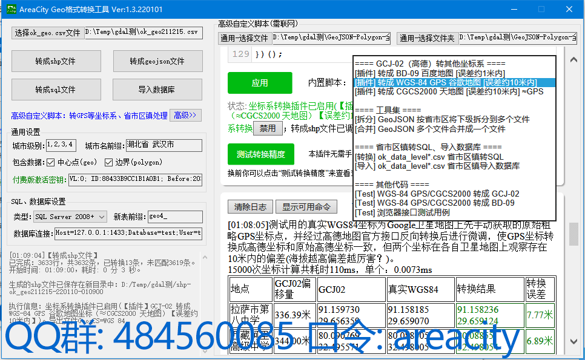
本工具软件下载
不带GDAL组件 (700KB+)：
[ 前往GitHub下载 ]
、[ 百度网盘下载 提取码: b6ct]
由于GDAL组件偏大，影响GitHub存放和下载，因此此包删除了此组件，启动时会提示你到 GISInternals 下载GDAL组件，参考下面安装教程。
[付费]【GEO四级】乡镇 坐标+边界范围
(ok_geo4_*.csv，90MB+压缩包 导出后300M+)：[ QQ群内下载 ]
、[ 百度网盘下载 提取码: b6ct 进入到 AreaCity Geo格式转换工具/乡镇第4级坐标边界数据 目录内下载]
乡镇第4级坐标边界数据为付费数据，压缩包内提供了部分数据供免费体验，其他乡镇第4级坐标边界数据需 [ 付费购买 ] 。
小提示：压缩包内已包含下面三个免费数据。
[免费]【GEO三级】省市区 坐标+边界范围
(ok_geo.csv，13MB+压缩包 解压后130M+)：[ 前往GitHub下载 ] 请下载 Releases 页面最新版本中的 ok_geo.csv.7z 文件，解压后得到 ok_geo.csv 。
[免费]【四级】省市区镇 4级行政区划数据
(ok_data_level4.csv，3MB+)：[ 前往GitHub下载 ] 请下载 Releases 页面最新版本中的 ok_data_level4.csv 文件 。
[免费]【三级】省市区 3级行政区划数据
(ok_data_level3.csv，200KB+)：[ 前往GitHub下载 ] 请下载 Releases 页面最新版本中的 ok_data_level3.csv 文件 。
数据版本
一、解压下载的软件zip包
按照上面下载地址下载软件包后，解压此zip包，双击 AreaCity-Geo-Transform.exe 运行。
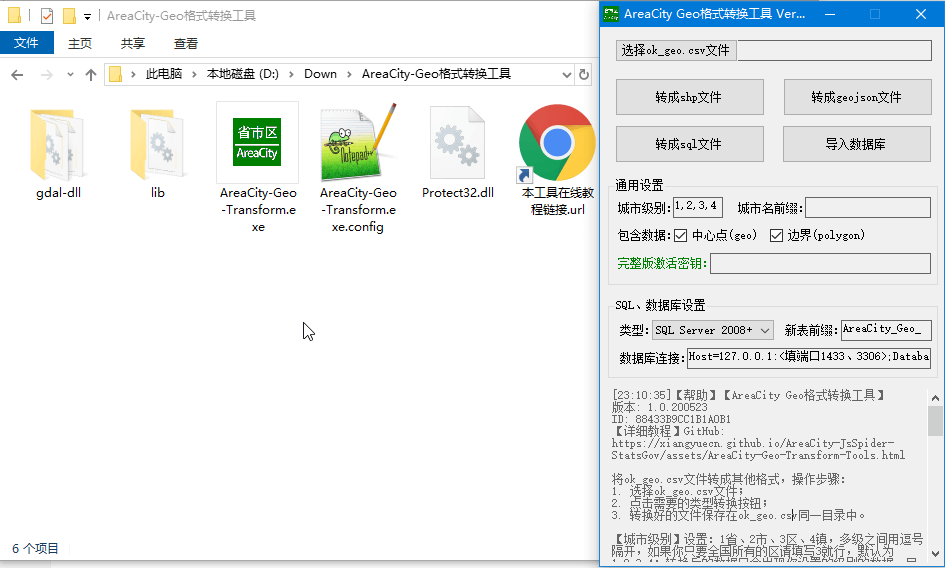
二、下载GDAL组件
如果你下载的已带GDAL组件的软件包，无需下载GDAL组件，请忽略本操作步骤。
如果你下载的是不带GDAL组件的软件包，工具软件在第一次运行时会提示到 GISInternals 下载GDAL组件，根据软件中提示的地址下载GDAL的压缩包，一定要下载32位的最新稳定版，你可以直接下载 release-1911-gdal-3-0-4-mapserver-7-4-3.zip 这个包。
下载完后，进行解压，记住解压的目录；然后返回工具软件，点击“选择GDAL解压bin目录”按钮，选择到你刚才解压的目录，进入到里面选择bin目录；然后点击“加载GDAL”按钮，即可完成GDAL组件的加载，然后就可以正常使用了。
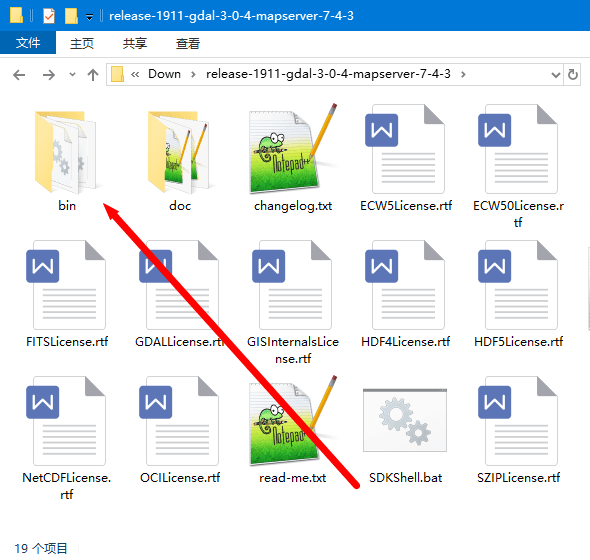
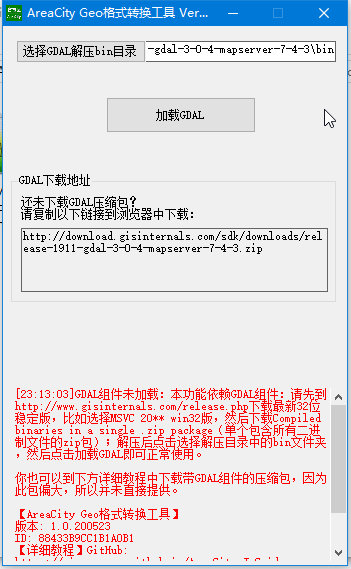
三、系统要求
支持的系统
支持Win10、Win8、Win7，32位、64位系统中运行，或者虚拟机中运行（需将软件和数据拷贝到虚拟机本地）；苹果电脑等系统请参考下面的 Mac OS等非Windows系统上如何使用 FAQ。
.NET Framework 4.5+ 运行环境
如果你电脑上没有安装.NET Framework 4.5.x以上版本（4.6.x、4.7.x均可），本工具软件将无法运行，请到微软官网下载 .NET Framework 4.7.2 Runtime ，安装完后再打开本工具软件。
Microsoft Visual C++ 2015-2019 Redistributable x86版运行时
如果你电脑上没有安装32位版Visual C++ 2015-2019运行时，GDAL组件将无法运行，请到微软官网下载 vc_redist.x86.exe ，安装完后再打开本工具软件。
步骤一、
选择 ok_geo.csv
或 ok_geo4_*.csv
文件；如果你还没有准备此文件，请参考上面的数据下载。
步骤二、
通用设置中配置相关参数，导出时将会按你的配置导出相关的数据。
【城市级别】设置：1省、2市、3区、4镇，多级之间用逗号隔开，如果你只要全国所有的区的数据请填写3就行，默认为1,2,3,4导出所有数据；转换后的数据只会出现你设置的级别的数据，目前免费数据源内没有第4级数据，填写了也不会导出第4级，第4级乡镇数据可联系客服购买。
【城市名前缀】设置：如果你只需要某个城市下面的数据，请填写需要的城市前缀（为ok_geo.csv中ext_path字段匹配前缀），比如只要湖北武汉所有区的数据请填写：'湖北省 武汉市 '（限定城市级别为3），注意结尾有一个空格，如果不填结尾的空格，在未限定城市级别时，武汉市这条数据也会匹配到结果中。
【包含数据】勾选：是否要导出相应的数据，ok_geo.csv中id、ext_path字段总是会导出，geo、polygon字段根据是否勾选才会导出。
【付费版激活密钥(数据密钥)】填写激活密钥后：软件将打开所有可用功能成为付费版，每次转换操作会导出所有匹配的数据。未填写激活密钥时：软件为免费版，每次转换操作最多导出一个城市和它的下一级数据。比如：要导出湖北省的全部数据，免费版只会导出湖北所有的市级数据，区级不会导出（可以手动一个个的导出每个市的所有区级），付费版会一次性导出湖北省全部市、区数据；导出全部数据：免费版只会导出所有的省这一级数据，付费版会一次性导出所有省、市、区数据。
数据密钥为特殊的激活密钥：除了拥有激活密钥的功能外，专门用来转换付费版数据。
步骤三、
点击“转成shp文件”按钮，耐心等待转换完成（转换完全部数据大概需要3分钟），转换的数据保存在第一步你选择的 ok_geo.csv 文件所在目录中，shp开头的文件夹内就是转换完成的数据了。
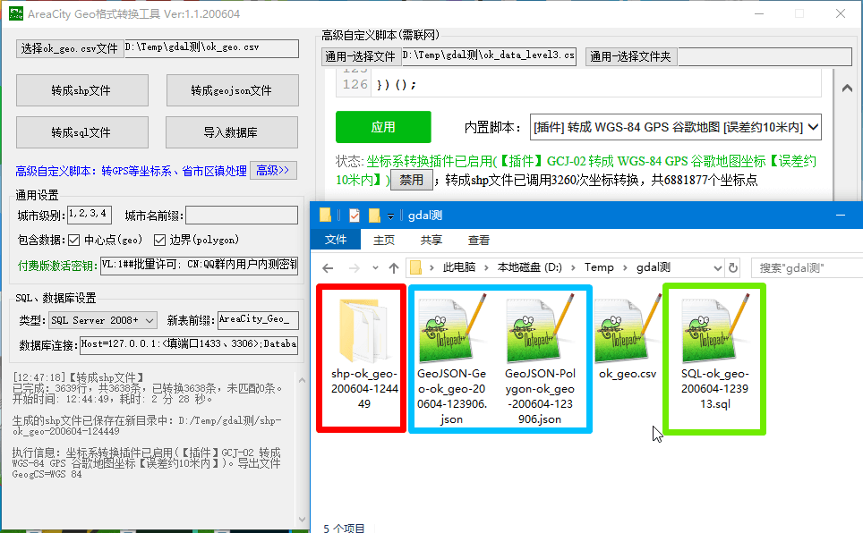
步骤四、
可以将转换成的shp文件在 ArcMap 等GIS软件中打开查看；注意：ok_geo.csv为高德地图的坐标数据，坐标系为GCJ-02火星坐标系，显示到Google地图、百度地图内有肉眼可见的偏移（几百米），可通过高级自定义脚本转换坐标系修正；此处以 ArcMap 为例。
1. 打开ArcMap，在Layers菜单上右键点击“Add Data”
2. 在Add Data对话框中点击“Connect To Folder”，选择 ok_geo.csv 所在目录
3. 在连接到的目录中，双击刚才转换生成的shp开头的文件夹，然后全选两个.shp文件
4. 不出意外，操作完成后 ArcMap 内已显示出边界图形和坐标；提示：polygon图层数据中额外会包含geo_wkt字段，为中心坐标的wkt格式文本（存在：POINT(123.45 45.678)、POINT EMPTY 两种），坐标值和geo图层中的值一致
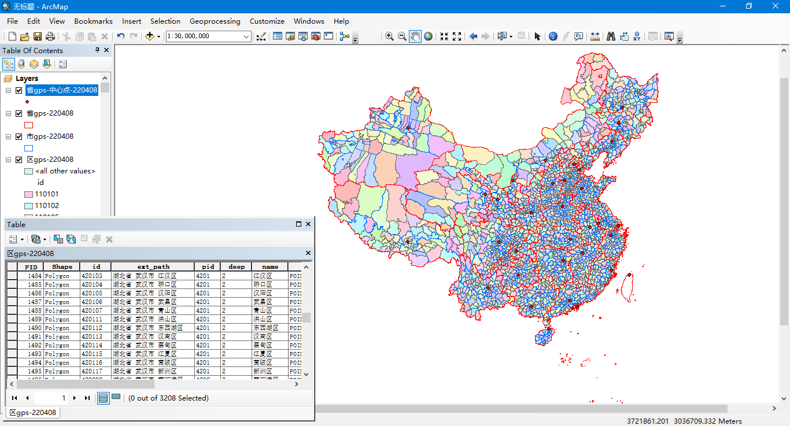
步骤一、步骤二、
请参考上面的ok_geo.csv坐标边界 转成shp文件，按它的步骤一、步骤二操作。
步骤三、
点击“转成geojson文件”按钮，耐心等待转换完成（转换完全部数据大概需要3分钟），转换的数据保存在第一步你选择的 ok_geo.csv 文件所在目录中，GeoJSON-Geo（中心坐标）、GeoJSON-Polygon（边界范围）开头的两个文件就是转换完成的数据了。
步骤四、
可以将转换成的json文件在GIS软件中打开查看；注意：ok_geo.csv为高德地图的坐标数据，坐标系为GCJ-02火星坐标系，显示到Google地图、百度地图内有肉眼可见的偏移（几百米），可通过高级自定义脚本转换坐标系修正；此处以在线的 geojson.io 为例。
1. 打开http://geojson.io/网站
2. 点击左上角的“Open”，点击“File”，分两次选择刚才转换生成的两个文件（注意你导出的数据量不应太大，比如只导出某个城市下面的区，这样文件就比较小方便浏览器上查看测试）
3. 不出意外，选择完成后地图上已经显示出边界图形和坐标；提示：Polygon文件数据中额外会包含geo_wkt字段，为中心坐标的wkt格式文本（存在：POINT(123.45 45.678)、POINT EMPTY 两种），坐标值和Geo文件中的值一致
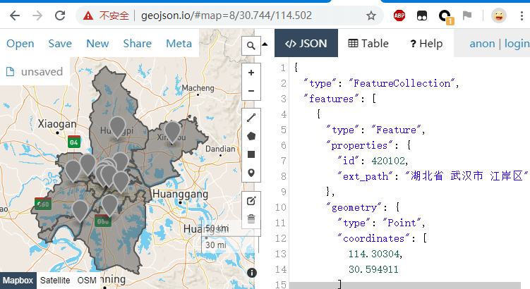
步骤一、步骤二、
请参考上面的ok_geo.csv坐标边界 转成shp文件，按它的步骤一、步骤二操作。
步骤三、
SQL、数据库设置中配置相关参数，导出时将会按你的配置导出成指定数据库相关的sql格式。
【SQL类型】设置：转成sql文件、导入数据库操作需要指明数据库类型。
【SQL新表前缀】设置：转成sql文件、导入数据库操作需要指明导入到的表的名称前缀，导出时会在名称后面拼接当前日期后缀，并重建此表。
【数据库连接】设置：转成sql文件无需设置此值。
步骤四、
点击“转成sql文件”按钮，耐心等待转换完成（转换完全部数据大概需要3分钟），转换的数据保存在第一步你选择的 ok_geo.csv 文件所在目录中，SQL开头的一个文件就是转换完成的数据了。
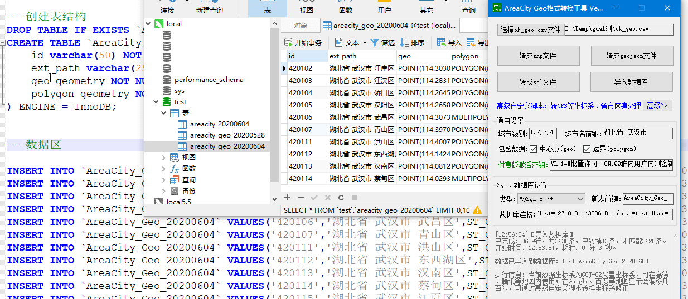
步骤五、
可以将转换成的sql文件导入到对应数据库中查看和使用，如何导入以实际的数据库类型为准，自行查阅相关资料。注意：ok_geo.csv为高德地图的坐标数据，坐标系为GCJ-02火星坐标系，显示到Google地图、百度地图内有肉眼可见的偏移（几百米），可通过高级自定义脚本转换坐标系修正；下面提供几段可能用得到的sql语句，为SQL Server版，其他数据库类型改写一下也不困难。
注意：MySQL 5.* 中进行空间计算查询时，不带ST_打头的函数均为采用Polygon的外接矩形计算，会导致结果不准确，应当使用带ST_打头的方法来进行查询，FAQ。
注意：MySQL的空间索引的创建要按官方文档进行创建，否则很可能会索引失效，从而导致空间查询异常缓慢；或者切换成MyISAM引擎，会比InnoDB引擎的空间查询快很多。
附：边界数据如何查询出 WKT 文本
用SQL查询空间类型字段时，需要用 ST_AsText() 方法转换成 WKT(Well Known Text) 文本，否则数据库可能会返回二进制数据不方便处理使用。
[MySQL] select id,ext_path,ST_AsText(polygon) as polygon from AreaCity_Geo where id=11
[MSSQL] select id,ext_path,polygon.STAsText() as polygon from AreaCity_Geo where id=11
附：其他数据库的支持（支持空间查询的Oracle、PostgreSQL等）
可尝试导出成MySQL版SQL文件，然后手动修改此SQL文件（PostgreSQL无需大的修改，Oracle参考文档）：
1. 将 CREATE TABLE 语句修改成目标数据库支持的创建表语法，字段类型 geometry 替换成目标数据库对应的类型名称（如Oracle: SDO_GEOMETRY）；
2. 将 INSERT 语句内的 ST_GeomFromText 批量替换成目标数据库支持的处理函数（如Oracle: SDO_GEOMETRY）；
3. 尝试将此SQL文件导入到数据库执行，有语法错误改正再尝试。
工具目前仅支持导入到MySQL、SQL Server数据库，如果要导入到其他数据库（Oracle、PostgreSQL等），请参考上面的转成sql文件。
步骤一、步骤二、
请参考上面的ok_geo.csv坐标边界 转成shp文件，按它的步骤一、步骤二操作。
步骤三、
请参考上面的ok_geo.csv坐标边界 转成sql文件，按它的步骤三设置【SQL类型】和【SQL新表前缀】。
【数据库连接】设置：导入数据库操作时需要设置的连接到数据库需要的参数信息集合，会通过此字符串中的参数连接到指定数据库，自动新建（表存在时会删除重建）表导入数据（数据入库后自己用sql去转移到别的表或填充别的表，自由度更大）。
步骤四、
点击“导入数据库”按钮，耐心等待导入完成（导入完全部数据大概需要5分钟），完成后可到数据库中查看你设置的新表前缀对应的表，数据全部在这个新表中。
步骤五、
请参考上面的ok_geo.csv坐标边界 转成sql文件的步骤五，用一下那几段sql语句测试测试（SQL Server版）。注意：ok_geo.csv为高德地图的坐标数据，坐标系为GCJ-02火星坐标系，显示到Google地图、百度地图内有肉眼可见的偏移（几百米），可通过高级自定义脚本转换坐标系修正。
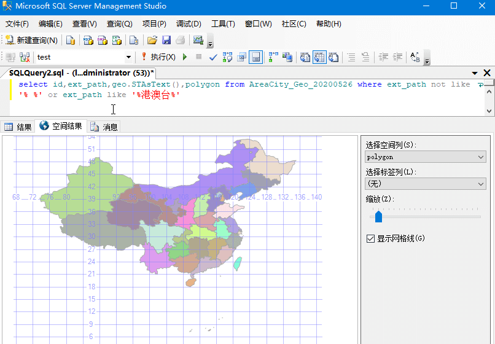
步骤一、
点击“高级>>”按钮展开高级自定义脚本，在内置脚本下拉框中选择“ok_data_level*.csv 省市区镇转sql”，然后点击应用。
点击上方的“通用-选择文件”按钮选择 ok_data_level3.csv 或 ok_data_level4.csv 文件；如果你还没有准备此文件，请到GitHub Releases 页面中下载然后解压，参考上面的数据下载。
步骤二、
数据库设置中、高级自定义脚本设置中配置相关参数，导出时将会按你的配置导出相关的数据。
【SQL类型】设置：转成sql文件、导入数据库操作需要指明数据库类型。
【SQL新表前缀】设置：转成sql文件、导入数据库操作需要指明导入到的表的名称前缀，导出时会在名称后面拼接当前日期后缀，并重建此表。
【数据库连接】设置：导入数据库操作时需要设置的连接到数据库需要的参数信息集合，会通过此字符串中的参数连接到指定数据库，自动新建（表存在时会删除重建）表导入数据（数据入库后自己用sql去转移到别的表或填充别的表，自由度更大）。启用了附加坐标、边界字段功能时也需要提供数据库连接，用来读取坐标、边界数据。
【自定义字段名】设置：你可以设置需要从 ok_data_level*.csv 中导入哪些字段，清除不要的字段，并可以修改字段名称。
【附加坐标、边界字段】设置：你可以将 ok_geo.csv 中的数据先导入数据库，然后在导入 ok_data_level*.csv 时将需要的geo、polygon字段数据通过本设置自动添加到新导入的省市区表中。
步骤三、
点击高级自定义脚本界面中的“省市区镇转SQL”按钮，耐心等待转换完成，转换的数据保存在第一步你选择的 ok_data_level*.csv 文件所在目录中，SQL开头的一个文件就是转换完成的数据了。
步骤一、步骤二、
请参考上面的ok_data_level*.csv省市区镇 转成sql文件，按它的步骤一、步骤二操作。
步骤三、
点击“省市区镇导入数据库”按钮，耐心等待导入完成，完成后可到数据库中查看你设置的新表前缀对应的表，数据全部在这个新表中。
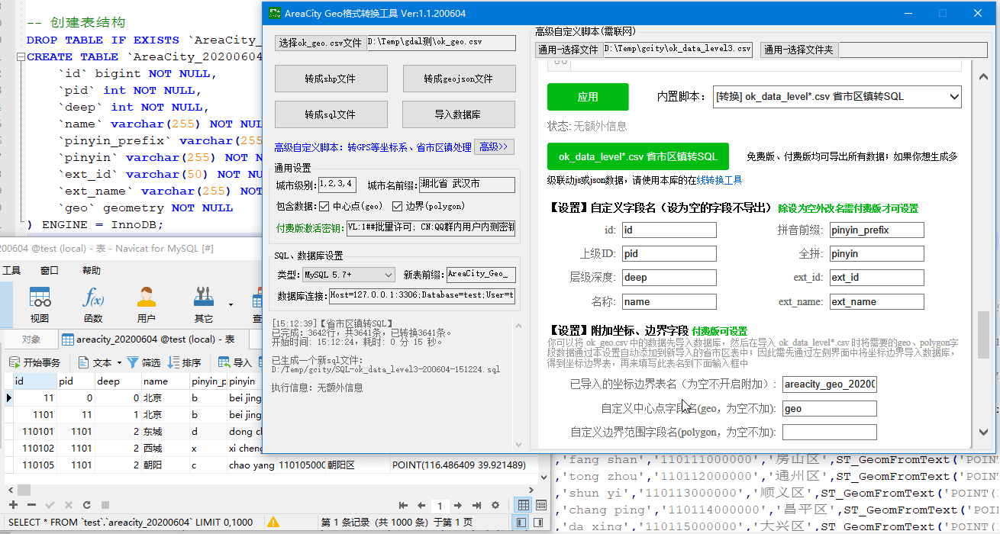
本拆分功能用于将一个大的 geojson 文件，根据pid、ext_path字段自动拆分成单独的小文件，子级数据默认会放在父级id命名的文件夹内。
全部数据将会拆分出：一个仅包含所有省份的文件；每个省份各一个文件，内容为此省份所有的市；每个市各一个文件，内容为此市所有的区县；每个区县各一个文件，内容为此区县所有的乡镇。
步骤一、
点击“高级>>”按钮展开高级自定义脚本，在内置脚本下拉框中选择“GeoJSON 按省市区将下级拆分到多个文件”，然后点击应用。
步骤二、
点击上方的“通用-选择文件”按钮，选择待拆分的geojson文件。
步骤三、
点击高级自定义脚本界面中的“开始拆分”按钮，耐心等待拆分完成，拆分完成后，生成的文件保存在选择的文件同一目录内的新建文件夹中。
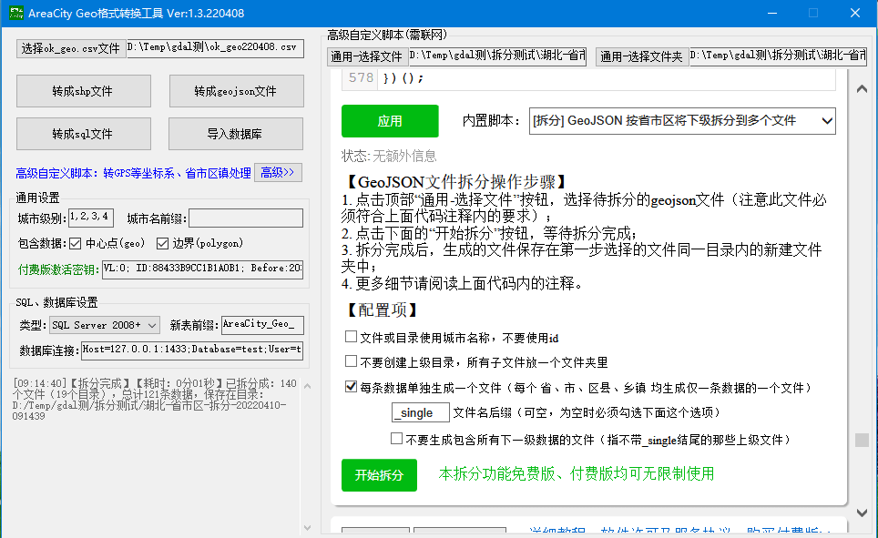
本合并功能用于将多个小的geojson 文件合并成一个大的，比如将多个城市零散的小geojson文件合并成一个大的文件。
步骤一、
点击“高级>>”按钮展开高级自定义脚本，在内置脚本下拉框中选择“GeoJSON 多个文件合并成一个文件”，然后点击应用。
步骤二、
将待合并的多个GeoJSON文件放到一个文件夹内，允许有子目录。
步骤三、
点击上方的“通用-选择文件夹”按钮，选择上一步这个文件夹。
步骤四、
点击高级自定义脚本界面中的“开始合并”按钮，耐心等待合并完成，合并完成后，生成的文件和选择的文件夹在同一目录。
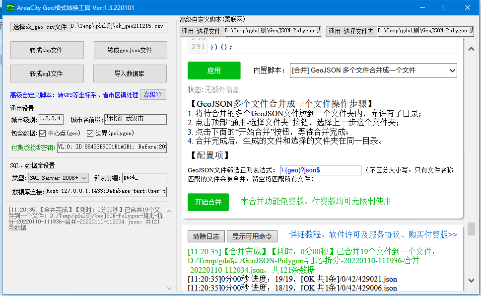
用户自定义控制参数用来改变软件的某些运行行为，可通过修改storage.json（需重启软件）、高级自定义脚本中的AppCmds.setConfig(key,value)（大部分设置立即生效）两个手段来定义参数，可用参数参考以下列表。
- User_WebviewSettingsUrl：更换“高级自定义脚本”启动时打开的页面地址，需重启软件生效，默认地址为github.io|gitee.io地址，如果你的网络访问github|gitee缓慢，可以切换到其他可用源（如：github clone后的本地文件路径：file:///你路径/assets/AGT/WebviewSettings.html）。
- User_Spatial_GeogCS_WKT：设置shp、geojson文件内的坐标系信息wkt格式，默认值为WGS84坐标系：GEOGCS["GCS_WGS_1984",DATUM["D_WGS_1984",SPHEROID["WGS_1984",6378137.0,298.257223563]],PRIMEM["Greenwich",0.0],UNIT["Degree",0.0174532925199433],AUTHORITY["EPSG",4326]]，比如你要shp文件内的坐标系为CGCS2000，可以设置为此值：GEOGCS["GCS_China_Geodetic_Coordinate_System_2000",DATUM["D_China_2000",SPHEROID["CGCS2000",6378137.0,298.257222101]],PRIMEM["Greenwich",0.0],UNIT["Degree",0.0174532925199433],AUTHORITY["EPSG",4490]]； 更多坐标系的wkt值可自行搜索，或用ArcMap中的 Layers右键属性 -> Coordinate System点开后查看列表，找到需要的坐标系然后右键另存为即可得到wkt文本，或用SQL Server查询select * from sys.spatial_reference_systems的well_known_text字段；注意：修改此值并不会转换ok_geo.csv的GCJ-02坐标到指定的坐标系，需要自行通过高级自定义脚本转换坐标的坐标系。
免费版：未填写激活密钥时本工具软件为免费版，会受到限制，每次转换操作最多导出全国所有省级、或一个城市和它的下一级数据；免费版的功能也足够强大了，就算不付费，需要的数据量不大的情况下，通过填写城市前缀 + 多点几次也能达到和付费版相同的效果。
付费版：填写有效激活密钥后软件将打开所有可用功能，解除限制，每次转换操作会导出所有匹配的数据，点击操作一次即可在5分钟内导出全国省市区所有数据。
激活密钥：激活密钥是免费版升级为付费版的核心许可凭据，密钥存在许可使用期限、可激活计算机数量的限制，激活密钥可通过付费购买、活动赠送等途径获得；激活密钥分多个种类，详细差异和价格请看下表。
《AreaCity Geo格式转换工具 - 激活密钥报价》
| 免费版 | 短期激活密钥[1] | 单机许可激活密钥 | 批量许可激活密钥 | ||
|---|---|---|---|---|---|
| 许可有效期 | 无限试用 | 2小时 | 3天 | 不限 | 不限 |
| 密钥有效期 | - | 2小时 | 3天 | 每30天自助续期[2] | 每30天人工续期[3] |
| 可激活计算机数量 | 免激活 | 1 | 1 | 1 | 不限 |
| 服务支持 |
功能限制：
每次可导出全国所有省级、或一个城市和它的下一级数据；
软件中标注的免费版有限制的功能。
|
解除所有限制
消息优先处理
不支持软件升级
不支持数据更新
0次技术指导机会
升级成单机许可只需补差价
|
解除所有限制
消息优先处理
支持软件升级
支持数据更新
1次技术指导机会[4]
|
解除所有限制
|
|
| 价格 | 免费 |
¥10
荐
|
¥29 | ¥298 | 不售 |
| 如何购买 |
请先加客服QQ 1251654593，联系客服后付款，提供需要激活的ID信息（打开软件底下有显示ID），然后客服给你签发激活密钥。请勿通过其他途径购买，以免造成损失。
温馨提示：此激活密钥是用来处理省市区三级的数据，不能用来处理乡镇级的付费数据，如果您需要乡镇级数据，请到此文档购买乡镇级的数据密钥（会赠送工具激活密钥）。
|
||||
[1] 短期激活密钥许可有效期只有2小时或3天的时间，2小时或3天之内你可以使用软件的所有功能；需要一次性导出全国所有省市区数据时（仅需耗时5分钟内即可全部导出），推荐购买2小时的此类型密钥进行体验，会很划算；后续如需继续体验可以再次购买，当天内升级成3天的只需补差价即可；如需升级成单机许可只需补差价（减去累计已支付的总金额）。
[2] 单机许可签发的密钥有效期为30天，许可有效期内可通过自助服务免费续签新密钥，新密钥拥有老密钥同等效力（违规被吊销的不允许续签）。
[3] 批量许可签发的密钥有效期为30天，许可有效期内可联系客服免费续签新密钥，新密钥拥有老密钥同等效力（违规被吊销的不允许续签）。
[4] 技术指导为一对一指导，单次服务最长时间为1小时；服务期间可提供软件功能范围内的：软件使用教学、数据导出配置方案；软件功能范围外的需求：如功能定制、特殊数据处理，根据需求复杂度和需要花费的预估时间，协商解决，如果需要的时间超出总的指导机会时间，需另付费。
【活动】新年活动：
1. QQ群内提供一套批量许可密钥，许可有效期到：2022-02-28，有效期内无限制使用，有格式转换需求的新老群组成员欢迎体验；
2. 购买单机许可激活密钥享 7折 优惠，活动优惠价：¥199 （原价：¥298），活动截止：2022-03-31；
活动期间有任何问题或建议欢迎和客服反馈。
软件启动时为什么会弹出“License not activated”弹框？
因为本工具软件的开发采用了 ILProtector 应用程序保护器，ILProtector旨在保护.NET应用程序的知识产权，因为我开发过程中采用的对方的30天评估许可证，因此他们会弹个框弹出来；这只是一个小问题，并不影响软件本身的功能和品质；如果你很反感这个，点击确定即可解决烦恼。
为啥坐标、边界范围在非高德地图上绘制发生了偏移？
因为数据源ok_geo.csv内的数据为高德地图的坐标数据，坐标系为GCJ-02火星坐标系，显示到Google地图、百度地图内有肉眼可见的偏移（几百米）；在不同坐标系下不能直接显示，需要先转坐标系，可通过高级自定义脚本转换坐标系修正。
已知：MySQL低版本中任何不带ST_打头的空间计算函数都是不精确的（不符合心里预期 MySQL Doc） ，至少包括：Intersects、Contains、Within、Disjoint、Equals...（包括MBR打头的同名方法） ；比如Intersects函数，表现为Polygon的最大外接矩形有包含就会作为匹配结果，这样就会无端多出很多不在边界内结果 ，所以应当使用ST_Intersects来计算空间位置（5.6+开始支持），5.5及以下版本无解（只能升级？），ST_打头的都是精确计算，结果符合预期 MySQL Doc。
另外：MySQL的空间索引的创建要按官方文档进行创建，否则很可能会索引失效，从而导致空间查询异常缓慢；或者切换成MyISAM引擎，会比InnoDB引擎的空间查询快很多。
加入QQ群：484560085，口令areacity，然后到群文件中下载。
本软件只支持在Windows系统上使用，非Windows系统请在别的Windows电脑上使用，包括虚拟机都可以。
比如苹果电脑Mac OS上可以安装 Oracle VM VirtualBox 虚拟机，注意：请将软件和数据全部拷贝到虚拟机内本地磁盘中，在虚拟机内转换导出数据，然后在将结果拷贝到物理机，不要用远程（尤其是SMB共享），否则软件将无法正常读写文件。
为何会限制使用，要激活密钥才能使用所有功能？
以前有不少人咨询过我是否提供别的格式数据，我只能回答需要自己找工具写代码转换；但有的新手开发者底子薄，要完成这个平凡的任务却甚是艰难，可能花费好多天都出不了成果。
从第一版数据采集的源码中我就提供了将坐标和边界范围导入到SQL Server的sql代码，现在我就试着将这些功能封装成工具，想着要加入更多常见的格式，就把shp和geojson这两个常见的格式提供了支持，就有了本工具。
数据和时间都能产生价值，GitHub库里面csv格式数据是开放的，但作者也要恰饭的嘛，最值钱但又不值钱的时间才是应该被付费的；本工具是生产力，助你快速产出成果，蝴蝶效应下升职加薪、迎娶白富美、走上人生巅峰不算是梦话；但作者还是要恰饭的嘛，所以你需要付费购买激活密钥才能使用到所有功能。
就算不付费，免费版的功能也足够强大了，多点几次也能达到和付费版相同的效果。
我相信关注本库且动手能力强的你，虽然转换一下格式并不是难事，但本工具能帮你节省大量的时间，欢迎体验。
购买激活密钥能砍价吗？
已经很便宜了，软件开发不易谢绝砍价，不过节假日、活动时也许可以打个折。
可以免费获得激活密钥吗？
如果你是将此软件用于公益等领域，可以联系作者为你们组织提供免费许可。
您（以下称“用户”）下载、使用我（以下称“作者”）提供的本工具软件，应当阅读并遵守本许可协议。请用户务必审慎阅读、充分理解各条款内容，特别是免除或者限制责任的条款，并选择接受或不接受。除非用户已阅读并接受本协议所有条款，否则用户无权下载、安装或使用本软件及相关服务，用户的下载、安装、使用等行为即视为用户已阅读并同意本许可协议的约束。
1. 用户应当直接从作者许可的途径，如GitHub AreaCity-JsSpider-StatsGov仓库、此仓库文档中包含的地址中、此仓库QQ群中等途径中获取本工具软件包；其他途径获取到的软件包是未经过作者授权的，存在安全隐患，可能会导致你的系统、资产受到侵害，作者对因此给用户造成的损失不予负责。
2. 作者将积极并采取措施保护用户的信息和隐私；软件本身不会读取和写入未经用户选择的目录，软件也不会在未经用户许可的情况下对外发送数据；用户在软件中输入的数据和信息，只会存储在用户计算机本地磁盘上。
3. 除法律法规有明确规定外，作者将尽最大努力确保本软件及其所涉及的技术及信息安全、有效、准确、可靠，但受限于现有技术，用户理解作者不能对此进行担保。
4. 用户理解，对于不可抗力及第三方原因导致的您的直接或间接损失，作者无法承担责任。
5. 用户因使用本软件进行处理、转换数据，和存储、转发、使用得到新数据，由此引起或与有关的包括但不限于利润损失、资料损失、业务中断的损害赔偿或其它商业损害赔偿或损失，需由用户自行承担。
6. 如若发生赔偿、退款等行为，赔偿、退款等累计金额不得超过用户实际支付给作者的总金额。
7. 用户不得使用本软件从事违反法律法规政策、破坏公序良俗、损害公共利益的行为。
8. 用户不得对本软件及其中的相关信息擅自出租、出借、销售、逆向工程、破解，不得在未取得作者授权的情况下借助本软件发展与本软件有关联的衍生软件产品、服务、插件、外挂等。
9. 用户不得利用本软件处理、传送、传播、储存侵害他人知识产权、商业秘密权等合法权利的内容，或从事欺诈、资金等违法犯罪活动。